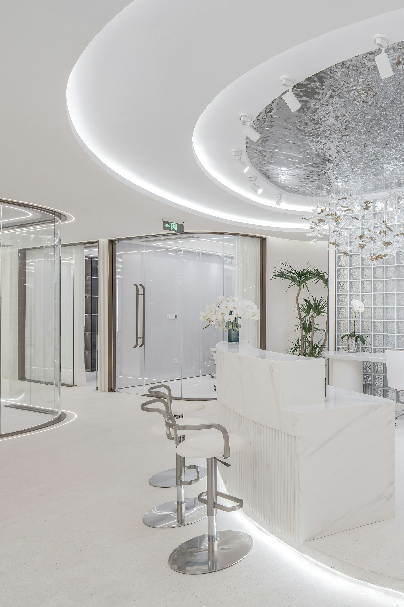
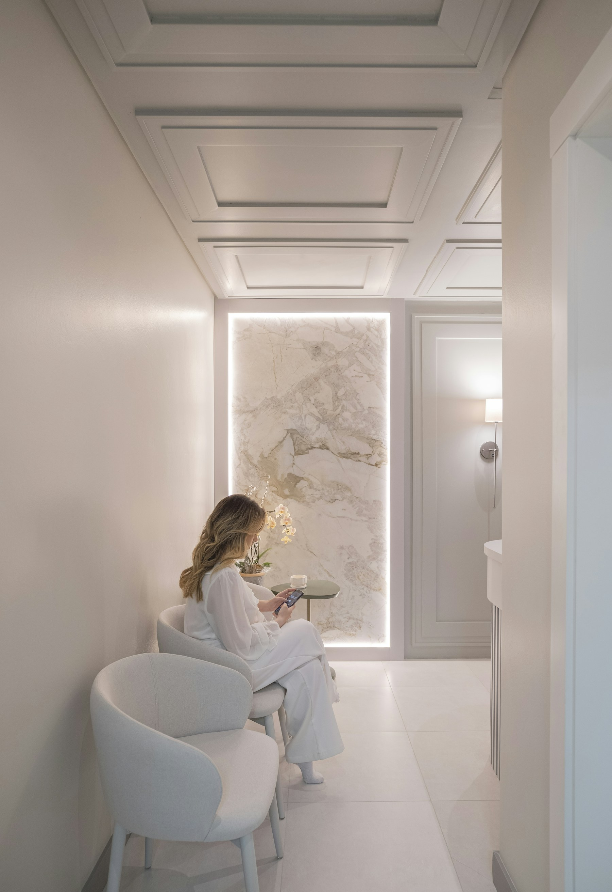
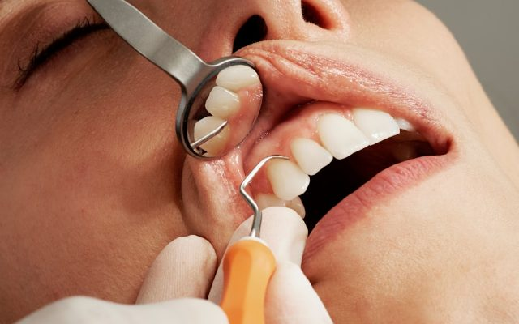
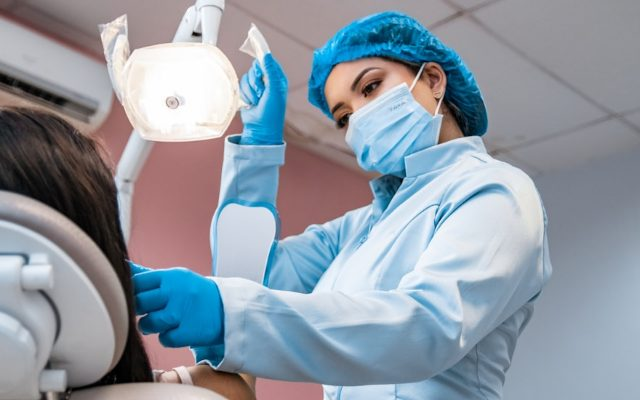
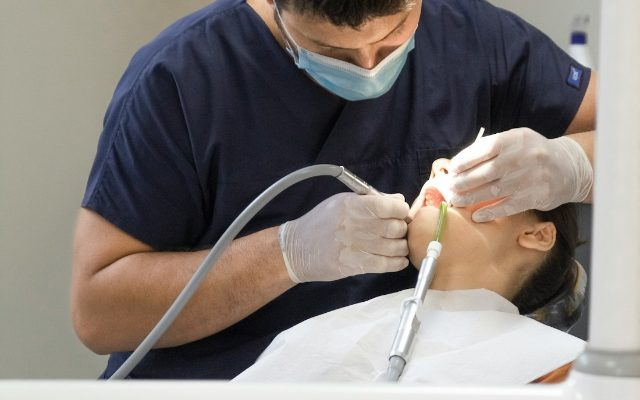
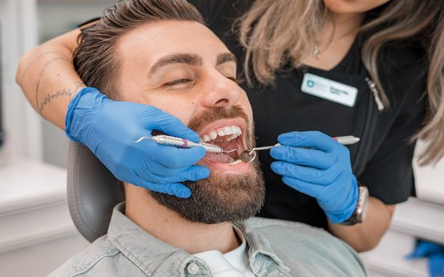
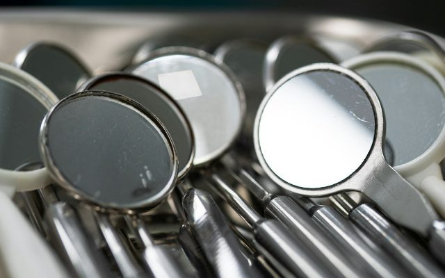
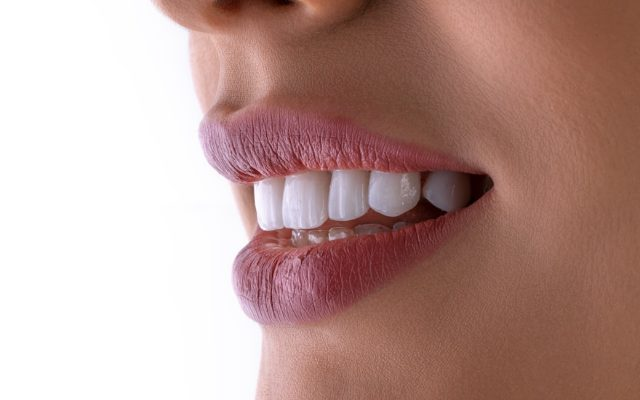
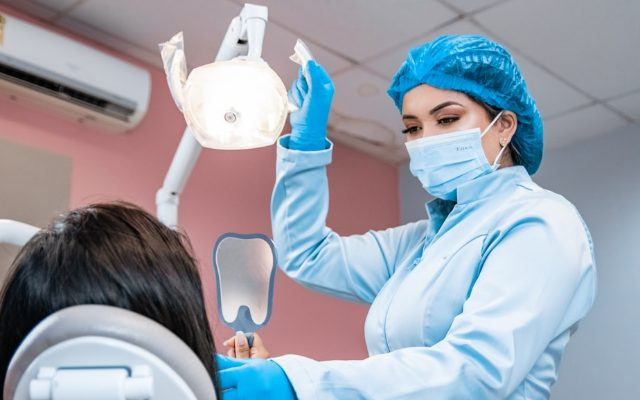
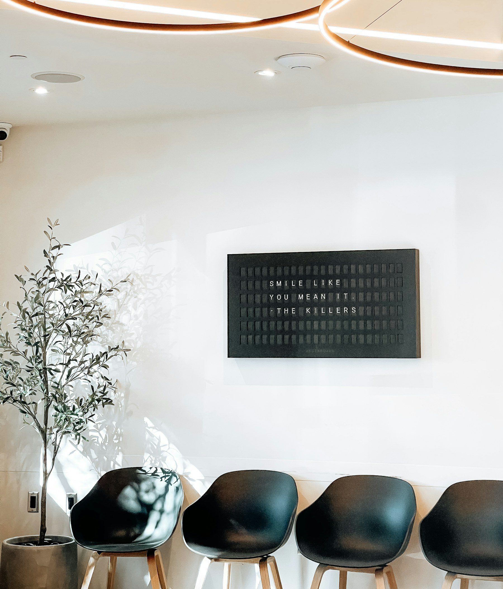

Batel · Curitiba · desde 2011
Se você adia o dentista há anos, o obstáculo raramente é o dente.
A primeira consulta tem 50 minutos e nenhum procedimento é feito nela.
- A consulta é cobrada e não tem compromisso.
- Quem atende é sempre a mesma cirurgiã-dentista.
- Dá para começar só conversando, sem exame.
- Se for caso de especialista, você sai com a indicação por escrito.
Retorno de contato em até 4 horas úteis · Seg–sex 8h–19h · Sáb 8h–12h · Estacionamento no local
- Profissional
- Dra. Helena Sampaio Tomé
- Título
- Cirurgiã-Dentista — CRO-XX 00.000
- Atuação
- Clínica Geral · sem especialidade registrada
- Onde
- Rua Modelo, 000 — Batel, Curitiba/PR
- Formação
- Mestrado em Clínica Odontológica
01 O adiamento
O que trava não é a dor. É não saber o que vem depois que você senta.
Quase todo adulto que chega aqui depois de anos parado repete a mesma frase: “eu sei que devia ter vindo antes”. Não há sermão nessa cadeira. O que existe é um roteiro: você fala primeiro, o exame vem depois, e nada é decidido no mesmo minuto em que é descoberto.
-
Ficha 01
Faz mais de três anos que você não senta numa cadeira
O tempo que passou é informação clínica, não motivo de constrangimento. A conversa fica mais longa e o exame começa pelo que menos incomoda.
-
Ficha 02
Você já parou um tratamento no meio e nunca voltou
Quase sempre por um destes três: o plano mudou sem aviso, o orçamento cresceu, ou ninguém explicou o porquê de cada etapa.
-
Ficha 03
Você evita sorrir em foto e já reparou que evita
Não precisa ser traduzido para linguagem clínica antes de ser dito. Você pode simplesmente contar isso.
Três coisas que não acontecem aqui
Ver como funciona a primeira consulta- Você não é apressado a fechar um plano no mesmo dia da avaliação.
- Você não descobre um procedimento pela conta: o orçamento é fechado por etapa e vem antes.
- Você não é atendido por alguém que nunca viu o seu caso.
Se a dúvida ainda é se vale marcar, mande a dúvida — não o agendamento.
Escrever antes de marcar02 Quem conduz
Quem conduz o seu caso, do primeiro exame à última manutenção.
Helena Sampaio Tomé é cirurgiã-dentista e atende como clínica geral em Curitiba desde 2011. Tem mestrado em Clínica Odontológica.
Não tem especialidade registrada no Conselho Regional de Odontologia — e por isso nenhuma é anunciada aqui. Quando o seu caso é de especialista, você sai da primeira consulta com a indicação e o motivo por escrito, não com um tratamento improvisado.
Na Vértice não existe rodízio de profissional. Quem faz o seu diagnóstico é quem executa e é quem acompanha a manutenção — inclusive quando o retorno é daqui a um ano e não há nada errado.

Vértice · BatelEm atividade desde 2011
Tempo de clínica em Curitiba. É um dado, não um adjetivo — e é o tipo de informação que o Código de Ética Odontológica permite anunciar.
Clínica geral, com encaminhamento por escrito
O que sai do escopo da clínica geral vai para um especialista, com o nome do profissional e o motivo. Você não descobre isso no meio do tratamento.
- Título profissional
- Cirurgiã-Dentista
- Inscrição
- CRO-XX 00.000
- Atuação
- Clínica Geral
- Formação stricto sensu
- Mestrado em Clínica Odontológica
- Especialidade registrada
- Nenhuma
- Em atividade desde
- 2011
- Responsável técnica
- Vértice Odontologia — CRO-XX 00.000-PJ
A ficha lista apenas o que o art. 43, §1º do Código de Ética Odontológica autoriza anunciar: especialidade registrada, titulação acadêmica stricto sensu, magistério e dados de contato.
A conversa inicial é com ela, não com um atendimento de triagem.
Falar com a Dra. Helena03 A primeira consulta
A primeira consulta é conversa e diagnóstico. Nenhum procedimento é feito nela.
Cinquenta minutos, cinco etapas com duração declarada. Clique em cada uma para ver o que acontece.
Conversa
Você fala primeiro. Histórico, o que te trouxe, o que já deu errado antes e o que te incomoda hoje.

Fig. 03 — EsperaCinquenta minutos, e nenhum deles é de espera
A consulta começa no horário marcado. Sem overbooking, sem senha, um paciente por faixa.
- Duração
- 50 minutos, cronometrados
- Etapas
- 5, com duração declarada
- Procedimento
- Nenhum é feito nesta consulta
- Você leva
- Plano e orçamento por escrito
O que você leva para casa
O plano por escrito, com as etapas na ordem e o número de sessões.
O orçamento
Detalhado por etapa. Se o escopo mudar, é refeito antes de executar.
O compromisso
Nenhum. Nada é executado sem o seu aceite.
Cinquenta minutos para sair sabendo. É por onde tudo começa.
Reservar um horário de avaliação04 O que a clínica geral resolve
O dia a dia de um consultório é mais curto do que a fama sugere.
Quase tudo o que uma clínica geral faz cabe em oito coisas. Elas estão aqui com o que são, quantas sessões costumam levar e em que consulta entram — nenhuma delas acontece na primeira, que é de avaliação. O que sai desse escopo é encaminhado, com o nome do profissional e o motivo por escrito.
8 de 8 em exibição
-

Limpeza
Remoção da placa e do tártaro que a escova não alcança, e polimento em seguida. É o procedimento mais comum de uma clínica geral, e o mais adiado.
-

Aplicação de flúor
Entra logo depois da limpeza, quando a avaliação indica. Age no esmalte — não é procedimento de aparência.
-

Restauração de cárie
A cárie é removida e o que se perdeu do dente é reconstruído com resina da cor dele. Quanto mais cedo, menor a parte a reconstruir.
-

Gengiva que sangra
Tratamento inicial da inflamação: raspagem, orientação de higiene e uma reavaliação para ver o que respondeu e o que não respondeu.
-

Extração simples
Quando o dente não tem como ser mantido, e a remoção não exige cirurgia. Se o caso for cirúrgico, ele é encaminhado — não improvisado aqui.
-
Atendimento de urgência
Encaixe no mesmo dia quando há vaga. A consulta de urgência existe para tirar a dor e dizer o que está acontecendo — não para fechar tratamento.
-

Clareamento
Feito com acompanhamento e só depois da avaliação: nem todo caso é indicado, e a cor que se alcança depende do dente de cada pessoa. Quem tem gengiva inflamada ou cárie ativa trata isso antes.
-

Orientação de higiene
Escovação, fio e intervalo de retorno ajustados ao seu caso — não ao caso genérico. Entra em toda consulta e não é cobrada à parte.
O que não é feito aqui
Estes casos saem do escopo da clínica geral e são encaminhados a um especialista, com o nome do profissional e o motivo por escrito. Você fica sabendo disso na avaliação, não no meio do tratamento.
- Tratamento de canal
- Implante e prótese sobre implante
- Aparelho e correção de mordida
- Cirurgia de siso incluso
- Doença de gengiva em estágio avançado
Se você não sabe em qual desses o seu caso cai, essa é exatamente a pergunta da primeira consulta.
Marcar a avaliaçãoAqui ninguém espera em pé, e ninguém espera em fila.
05 Convênios, horários e localização
Convênios, horários e como chegar ao Batel.
Horário de atendimento
- Segunda a sexta
- 8h — 19h
- Sábado
- 8h — 12h
- Domingo
- Fechado
A agenda trabalha com intervalo entre consultas: menos horários por dia, menos atraso. Se você só consegue vir depois do trabalho, avise na mensagem — o fim de tarde é a faixa que enche primeiro e a que mais vale reservar com antecedência.
Convênios e formas de pagamento
- Atendimento particular
- Reembolso: nota e relatório emitidos para o seu plano
- Cartão em até 12 parcelas
- Pix e transferência
- Convênios odontológicos atendidos: lista mantida atualizada nesta seção
Se o seu convênio não estiver aqui, pergunte pelo WhatsApp.

A esperaOnde fica
Vértice OdontologiaRua Modelo, 000 — Batel
Curitiba/PR — CEP 00000-000
(00) 00000-0000
- Estacionamento no local
- Acesso sem degraus, elevador até o andar
Se o horário é o que trava, comece perguntando pelo horário.
Conferir um horário disponível06 Contato
Comece pela conversa. A cadeira vem depois.
WhatsApp — o caminho mais curto
Quem responde é a equipe da clínica, no horário de atendimento. O retorno é em até 4 horas úteis. Você pode escrever só uma dúvida — não precisa ser um pedido de agendamento.
Enviar mensagem no WhatsApp- Telefone
- (00) 00000-0000
- Endereço
- Rua Modelo, 000 — Batel, Curitiba/PR
- Horário
- Seg–sex 8h–19h · Sáb 8h–12h
- Retorno
- Até 4 horas úteis